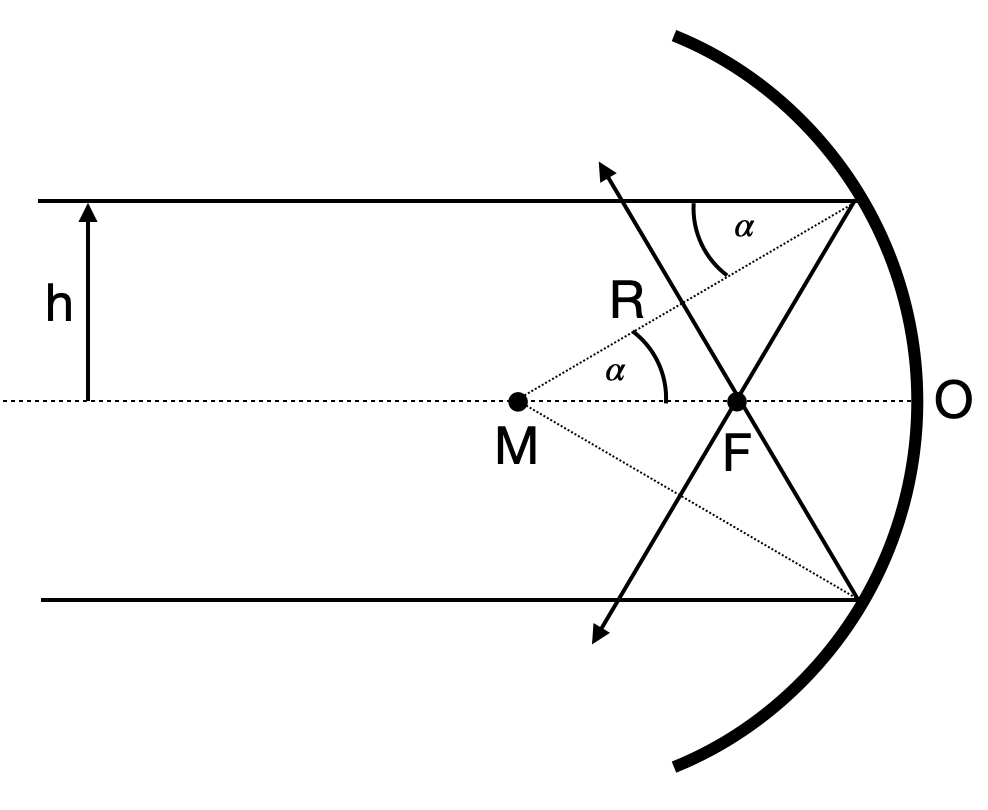

This page was generated from `source/notebooks/L2/Optical Elements.ipynb`_.

Optical Elements¶
Plane Mirrors¶
If a point \(P\) send out light that is reflected on a mirror as depicted in the image below, the rays reflected from the mirror diverge, but appear to originate from a point \(P^\prime\) behind the mirror. The distance of this image point from the mirror is the same as the one of the object point from the mirror due to the reflection law. An observer, who would thus collect all the reflected rays and image them e.g. onto the retina of his eye will see the point behind the mirror.

If now many point of an object emit light towards the mirror then this is also true for all of the points and the whole object appears as an image behind the mirror. Consequently, the image has the same size than the object. Therefore the magnification defined as
\begin{equation} M=\frac{h_{\rm image}}{h_{\rm object}}=1 \end{equation}

Concave Mirrors¶
When we apply the law of reflection for a concave mirror (i.e. the reflecting side of the mirror is on the inside of the spherical surface), the light parallel to the optical axis at a distance \(h\) is reflected towards the optical axis and crosses the axis at a specifc point \(F\). For symmetry reasons, a ray on the other side of the mirror needs to cross the axis in the same point.

We may calculate the position of the point \(F\), e.g. the distance from the mirror surface point \(O\), by applying the law of reflection. If the spherical mirror surface has a radius \(R\), then the distance between the center of the sphere \(M\) and the point \(F\) is given by
Therefore, we can also calculate the distance of the mirror surafce from the point \(F\), which results in
\begin{equation}\label{eq:focal_length} OF=R\left (1-\frac{1}{2\cos(\alpha)}\right)=f \end{equation}
This distance is the so-called focal length of the concave mirror \(f\). For small angle \(\alpha\), the above equation yields the so called paraxial limit (all angles are small and the rays are close to the optical axis). In this limit we find \(\cos(\alpha)\approx 1\) and the focal length becomes \(f=R/2\). If we replace the cosine function by \(\cos(\alpha)=\sqrt{1-sin^2(\alpha)}\) with \(\sin(\alpha)=h/R\), we find
\begin{equation} f=R\left [ 1-\frac{R}{2\sqrt{R^2-h^2}}\right ] \end{equation}
This equation is telling us, that the focal distance is not a single value for a concave mirror. The focal distance rather changes with the distance \(h\) from the optical axis. If \(h\) approaches \(R\) the focal length become shorter.
To obtain now an equation which predicts the point at which the reflected ray intersects the optical axis if it emerged at a point \(A\), we just consider the following sketch.

For this situation, we can write down immediately the following relations
Further
and
and finally
from which we obtain the imaging equation
This equation has some surprising property. It if completely independent of \(h\) and \(\gamma\). That means all points in a plane at a distance \(g\) are images into a plane at a distance \(b\). Both planes are therefore called conjugated planes.
Imaging Equation Concave Mirror
The sum of the inverse object and image distances equals the inverse focal length of the cocave mirror.
This equation now helps to construct the image of an object in front of a concave mirror and we may in general differentiate between the following general situations:
\(g>2f\): image is real, inverted and smaller than the object
\(g=2f\): image is real, inverted and of the same size than the object
\(f<g<2f\): image is real, inverted and larger than the object
\(g<f\): image is virtual, upright and larger than the object
Prisms¶
Prisms are wedge shaped optical elements made of a transparent material as for example of glass.